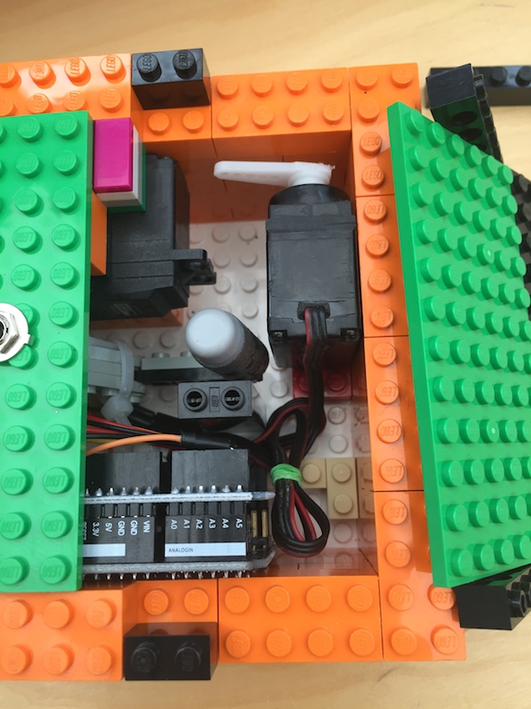
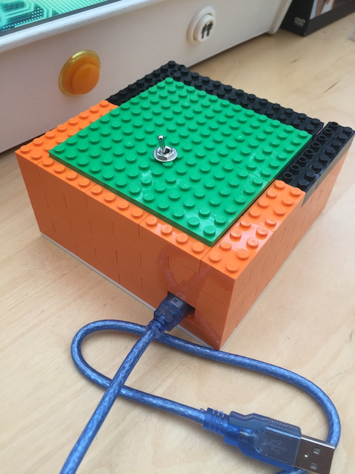

Getting Close
Another evening of ‘I Made A Thing’-ing, and I’m happy with the results.
I’ve used a ‘ProtoShield‘ to help tidy up the wiring. I’d recommend anyone to check them out, especially if your soldering skills are a bit rusty.
[Original external image unavailable]
These slot straight onto the top of your Arduino, but can easily be removed if you need the Arduino later on for other projects – Without you needing to remove all your wires! Very handy.
In my later Arduino projects I’ll probably try buying a ‘Nano‘. These are (nearly) functionally the same as the Arduino Uno, but take up considerably less room and are more amenable to soldering to make projects a bit more permanent.
It’s a tight squeeze in the Lego box, but it does all fit. Just…

And with the lid back on, I’ve got this!

I’m pretty happy with that!
Looking at it now, I think I’m going to buy some Lego ‘flat plates’ to decorate the top of the box, and I’ve got some extra coding to do to add some ‘character’ to the finger. Ideas:
- Stop the finger from going completely back inside the box, making it look like it is getting a bit ‘impatient’.
- Add a ‘sleep’ to the finger, so if you flick the switch it does not immediately turn it off again.
It will make the player think they’ve ‘won’… - Make the finger ‘hold’ the switch in the ‘off’ position.
- Mako the lid open slightly every once in a while, allowing the finger to ‘peek out’ and ‘watch’.